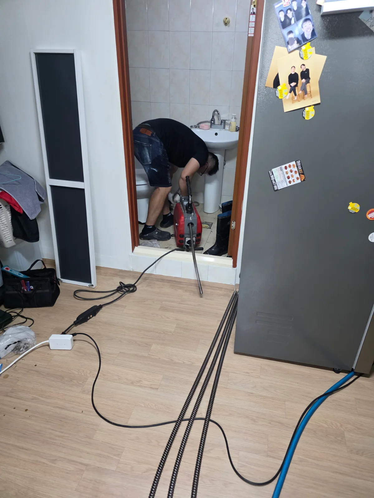

송파구 석촌동 변기막힘, 현장 도착 후 진단
송파구 석촌동 현장에 도착해 먼저 변기의 배수 상태와 연결된 배관 계통을 점검했습니다.
변기막힘은 변기 자체 트랩에 이물질이 걸려 발생할 수도 있지만, 하부 오수배관이나 외부로 연결되는 오수관의 배수 상태가 좋지 않을 때도 변기에서 먼저 이상 증상이 나타날 수 있습니다.
따라서 증상이 나타난 변기만 반복해서 관통하기보다 어느 구간에서 배수 흐름에 문제가 생겼는지를 확인하는 과정이 중요합니다.
신라건축설비는 변기막힘·싱크대막힘·하수구막힘 현장에서 무조건 큰 작업부터 진행하지 않습니다. 현장 증상과 배관 구조를 먼저 확인하고 관통, 내시경검사, 석션, 샤프트, 고압세척 가운데 필요한 공법을 선택해 단계적으로 작업합니다.
작업 범위가 확대되거나 추가 장비가 필요한 경우에는 작업 내용과 비용에 영향을 주는 부분을 사전에 설명하고 진행하는 것을 원칙으로 합니다.
1단계: 증상 확인과 필요한 장비 작업
우선 실내 배관에 전문 관통기를 투입해 배관 내부의 흐름을 확보하는 작업을 진행했습니다.
사진에서도 긴 관통 스프링을 실내 배관으로 투입하는 작업 과정이 확인됩니다. 단순한 수동 작업이 아니라 배관 깊숙한 구간까지 접근할 수 있는 전문 장비를 이용해 배수 계통을 점검했습니다.
이후 배관 내시경 카메라를 투입해 내부를 직접 확인했습니다. 내시경 화면을 통해 약 3.3m부터 16m 이상 구간까지 배관 내부를 확인한 기록도 남아 있습니다.
막힘 작업에서 배관 내시경검사가 중요한 이유는 단순히 물이 내려간다는 결과만 보는 것이 아니라 실제 배관 내부 상태와 추가 작업이 필요한 구간을 직접 확인할 수 있기 때문입니다.
이번 석촌동 변기막힘 현장 역시 실내 관통작업만으로 마무리하지 않고 추가적인 오수관 점검으로 이어갔습니다.

2단계: 원인 구간 처리와 정상 작동 확인
배수 계통을 추가로 확인하기 위해 건물 외부 오수관 맨홀을 개방하고 본격적인 배관고압세척 작업을 진행했습니다.
현장에는 고압세척 장비를 탑재한 작업 차량을 배치하고 긴 고압호스를 외부 오수관에 투입했습니다. 작업자가 맨홀 내부 상태와 배수 흐름을 직접 확인하면서 호스를 이동시켜 오수관 내부를 세척했습니다.
고압세척은 단순 관통으로 물길만 만드는 작업과 달리 배관 내부에 쌓인 오염물과 침전물을 강한 수압으로 제거하면서 배관 내부를 세척하는 작업입니다.
특히 오수관처럼 배관 길이가 길고 여러 배수구가 연결되는 구간은 막힌 지점만 일시적으로 관통하는 것보다 현장 상태에 따라 배관 내부를 충분히 세척하는 것이 중요할 수 있습니다.
신라건축설비는 생활 변기막힘을 전문적으로 해결하면서 문제가 오수관이나 공용배관까지 이어진 경우 배관 내시경검사, 관통, 샤프트, 고압세척과 배관 보수·교체공사까지 현장 상황에 맞춰 대응할 수 있습니다.

작업 결과와 재발 방지 안내
이번 송파구 석촌동 변기막힘 현장은 변기에서 나타난 배수 문제를 단순 변기 내부 문제로만 판단하지 않고 실내 관통작업, 배관 내시경검사, 외부 오수관 점검과 고압세척까지 단계적으로 진행했습니다.
변기막힘이 반복되거나 여러 배수구에서 동시에 배수 불량·역류 증상이 나타난다면 변기 하나만의 문제가 아니라 오수배관 또는 공용배관의 상태도 함께 살펴볼 필요가 있습니다. 반복적으로 단순 관통만 하기보다 배관 내시경으로 내부 상태를 확인하고 필요한 경우 배관스케일링이나 고압세척을 검토하는 것이 재발 원인을 파악하는 데 도움이 됩니다.
신라건축설비는 송파구 석촌동을 비롯한 서울 전 지역과 경기권에 출동해 변기막힘·싱크대막힘·하수구막힘을 전문적으로 처리합니다. 작업 전 증상과 배관 상태를 확인해 필요한 작업 범위와 비용을 안내하고, 작업 이후 문제가 발생할 경우 A/S 및 사후 대응이 가능하도록 관리하고 있습니다.
단순 생활 막힘부터 공용배관·메인 오수관, 배관 내시경검사, 고압세척과 고난도 배관공사까지 현장 상태에 맞춰 진단부터 후속 작업까지 대응합니다.
최종 조치: 실내에서 전문 관통기를 이용해 배관 작업을 진행한 뒤 배관 내시경을 투입해 내부 상태와 배관 구간을 확인했습니다. 이어 외부 오수관 맨홀에 접근해 고압세척 호스를 투입하고 오수관 내부 세척 및 통수 작업을 진행했습니다. 작업 과정에서 배관 상태를 확인하며 필요한 범위를 단계적으로 처리했습니다.
현장 방문 전 확인하는 비용과 작업 범위
신라건축설비는 현장 증상과 배관 구조를 확인한 뒤 필요한 작업과 예상 비용을 안내합니다. 단순 관통으로 해결되는지, 배관내시경·석션·고압세척 또는 변기 탈거가 필요한지는 현장 상태에 따라 달라집니다. 출장비와 야간 작업비, 추가 장비 비용이 발생할 수 있는 경우 작업 전에 먼저 설명하고 동의를 받은 범위에서 진행합니다.
업체를 선택할 때 확인할 사항
무조건적인 ‘0원’ 표현보다 실제 작업 범위, 추가 비용 조건, 사용 장비와 사후 대응 기준을 확인하는 것이 중요합니다. 해결되지 않았을 때의 비용 기준과 작업 후 동일 증상 발생 시 점검 범위를 사전에 문의해두면 불필요한 분쟁을 줄일 수 있습니다.
송파구 변기막힘 자주 묻는 질문
변기막힘은 왜 반복되나요?
송파구 석촌동 현장처럼 변기의 배수가 원활하지 않아 변기막힘 증상이 발생한 현장이었습니다. 변기가 막히면 가장 먼저 변기 내부 이물질을 의심하기 쉽지만, 변기에서 시작된 배수 불량이 오수배관이나 건물 외부 메인 오수관의 흐름과 연관되는 경우도 있어 반복되는 증상이라면 배관 전체의 흐름을 확인해야 합니다. 증상은 원인이 현장마다 다를 수 있습니다. 변기 내부 이물질뿐 아니라 하부 오수관 막힘이나 배관 상태 때문에 반복될 수 있습니다. 같은 변기막힘이 재발하면 막힌 위치와 원인을 다시 확인하는 것이 중요합니다.
변기 물이 안 내려가거나 역류하면 변기뚫는업체를 불러야 하나요?
물이 천천히 내려가거나 수위가 차오르고 변기역류가 반복되면 단순 뚫어뻥보다 전문 장비 점검이 필요한 경우가 있습니다. 현장에서는 증상과 배관 구조를 먼저 확인합니다.
변기 이물질 막힘은 변기를 탈거해야 하나요?
물티슈·청소포·플라스틱·음식물처럼 변기 트랩에 걸린 이물질은 위치에 따라 변기 탈거가 필요할 수 있습니다. 무조건 탈거하지 않고 먼저 막힘 위치를 판단합니다.
변기뚫는업체는 어떤 장비로 작업하나요?
현장 상태에 따라 석션, 에어건, 배관내시경, 변기 탈거 등을 사용합니다. 하부 오수관 문제라면 변기만 뚫는 작업보다 배관 구간 확인이 중요합니다.
변기막힘 비용은 어떻게 정해지나요?
단순 관통인지, 이물질 제거와 변기 탈거가 필요한지, 오수관이나 공용배관 작업이 필요한지에 따라 달라집니다. 추가 장비나 작업이 필요하면 진행 전에 범위와 비용을 안내합니다.
변기에서 냄새가 나거나 물이 자주 차오르는 것도 막힘과 관련 있나요?
악취나 수위 이상이 항상 막힘 때문인 것은 아니지만 배수 불량, 오수관 상태, 연결부 문제와 함께 나타날 수 있습니다. 반복되면 현장 점검으로 원인을 구분해야 합니다.
변기막힘 서울·경기 출동지역
신라건축설비는 송파구 석촌동 현장을 포함해 서울 25개 구와 경기도 31개 시·군의 배관 문제를 상담합니다. 현장 거리와 기사 배정 상황에 따라 출동 가능 여부를 먼저 안내드립니다.
서울 전 지역
강남구 · 강동구 · 강북구 · 강서구 · 관악구 · 광진구 · 구로구 · 금천구 · 노원구 · 도봉구 · 동대문구 · 동작구 · 마포구 · 서대문구 · 서초구 · 성동구 · 성북구 · 송파구 · 양천구 · 영등포구 · 용산구 · 은평구 · 종로구 · 중구 · 중랑구
경기도 주요 출동지역
수원시 · 용인시 · 고양시 · 화성시 · 성남시 · 부천시 · 남양주시 · 안산시 · 평택시 · 안양시 · 시흥시 · 파주시 · 김포시 · 의정부시 · 광주시 · 하남시 · 광명시 · 군포시 · 양주시 · 오산시 · 이천시 · 안성시 · 구리시 · 의왕시 · 포천시 · 양평군 · 여주시 · 동두천시 · 과천시 · 가평군 · 연천군